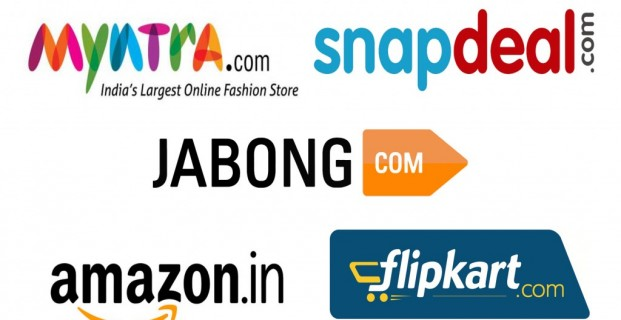

India will have about 500 million Internet users by June 2017, studies by Internet and Mobile Association of India and Indian Market Research Bureau indicate. Urban India with an estimated population of 444 million already has 269 million (60 percent) using the Internet.
Rural India, with an estimated population of 906 million (2011 census), has only 163 million (17 percent) Internet users. Thus, there are potential approximately 750 million users still in rural India who are yet to become Internet users, if they are connected, the report adds.
Over 100 million Indians will have made at least one online purchase by end-2017 as compared with 69 million in 2016, a joint report by Associated Chambers of Commerce and Industry of India and Resurgent India states.
CURRENT E-RETAILING SCENARIO:
Healthy growth in previous years and projections indicating boom time has led several companies to launch e-commerce websites. Traditional favourites retained their hold while newer ones consolidated their market position.

Amazon India:
A large number of people from India swear by the services of amazon. Amazon and flipkart are always at war with each other and are always at close heels. Amazon has an equally large number of products as flipkart. In fact, Amazon apparently sells more than flipkart. Since amazon is an American company, it lacks the desi taste that would be preferred by an Indian. It would be wise to indianise its Indian domain. It would then be an instant hit amongst the masses.
SHOP FROM HERE, amazon.in
Flipkart:
This one has to come first hands down. The entire country is completely dependent on Flipkart for nearly all their shopping needs. Flipkart sells everything from gift vouchers to electronics to home appliances. In fact, statistics claim that there are more items on flipkart than in a mall. Hence, Indians are heavily reliant on flipkart for all their shopping needs.
SHOP FROM HERE, flipkart.com
Snapdeal:
Snapdeal is a completely Indian website and is often preferred by the masses for its cheap rates. It sells products at really low prices and hence, is a favourite of the masses. It is a good idea to buy from Snapdeal if you are looking for absolutely cheap prices. However, there have been times when consumers have complained of the products of Snapdeal and hence, some of them stay away from Snapdeal.
SHOP FROM HERE, snapdeal.com
Ebay.in:
When any one takes name of best sites for shopping online India then no one can ignore the name of Ebay and it is serving from last many years and just like Amazon it is also regularly increasing their buyers of the products day by day and mostly every main products can be purchased through them at good cost with quality services also.
SHOP FROM HERE, ebay.in
Jabong:
Jabong is again an American brand but seems to be doing very well in India. It has a large number of clothes and accessories for sale and is a complete paradise for those who love shopping for clothes. It has all kinds of products from western wear to desi kurtis and it would be fun to sit home and shop for clothes on jabong. Jabong is excessively preferred by women shoppers.
SHOP FROM HERE, jabong.com
Myntra.com :
An equally large number of women favour myntra over jabong. Myntra also has a large number of accessories and clothes on its online portal. It has a large number of categories as well and one can buy from a category of their choices. From western to ethnic to traditional, all kinds of clothes are sold on myntra.
SHOP FROM HERE, myntra.com
Homeshop18:
This is an equally popular website amongst online shoppers. Those who do not mind waiting a little extra for delivery at the reward of a lower price, order from here. A lot of times, the cheapest of items and the remotest of items are easily found on homeshop18.com. Thus, this site also has an equally large number of shoppers who are loyalists. However, homeshop18 cannot be trusted when one is in an emergency. You’d rather buy from one of the websites where they give express deliveries.
SHOP FROM HERE, homeshop18.com
ShopClues:
Shopclues is famous for their heavily discounted best shopping deals. Shopclues is one of the best online stores that offers a wide variety of cameras, Computer accessories, Mobile, Gift, Jewellery, Cosmetics, toys, clothes, books and bag.
SHOP FROM HERE, shopclues.com
FirstCry.com:
Firstcry.com India’s largest store for Kids selling 70000+ items from 400+ top International and Indian brands.
For, the options available to the consumer are fairly limited and it will be a while before the consumer is spoilt for choice with a large number of online shopping portal.
SHOP FROM HERE, firstcry.com
Infibeam:
Infibeam is an Indian internet and e-commerce conglomerate involved in online retailing, e-commerce software and internet services. The company is headquartered in Ahmedabad, India. It is an online retailer for books, electronics, and automobiles in India. Started in 2007, the company has offices in Ahmedabad, Delhi, Mumbai and Bangalore, and has a total of 1300 employees.
SHOP FROM HERE, infibeam.com